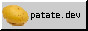
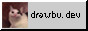
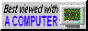
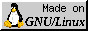
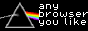

[ Offline ]
Server stats unavailable
build:
[ - ] Github: @dawoox
[ - ] LinkedIn: /in/bellanger-antoine
[ - ] Discord: @dawoox
@dawoox
[ - ] Email: me@dawoox.dev
I'm Dawoox, a software engineer (and part-time maker)
This website is my own little corner of the internet used as a technical demo of whatever interesting thing came on my feed.
nm
objdump




